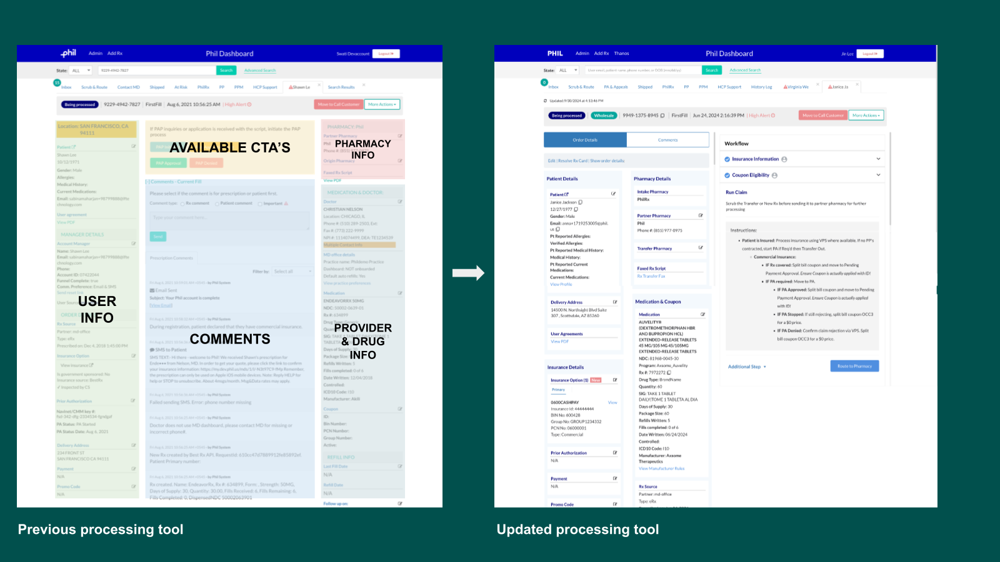
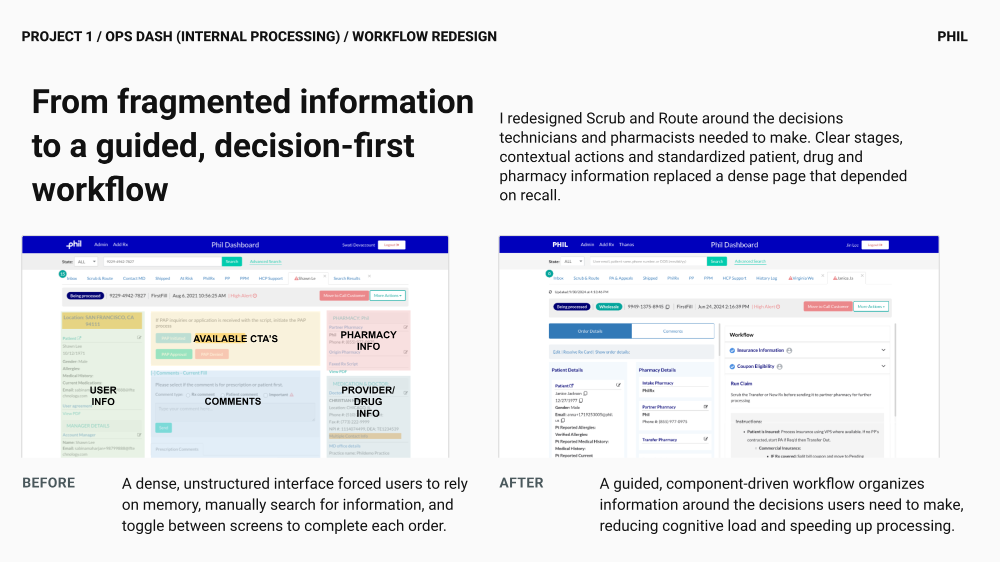
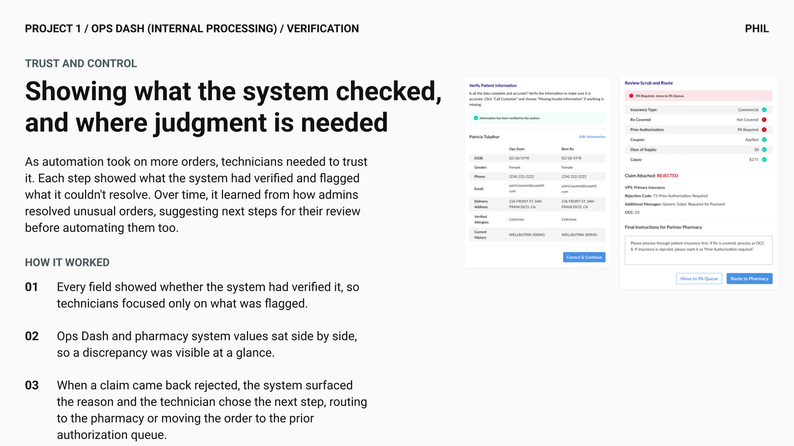
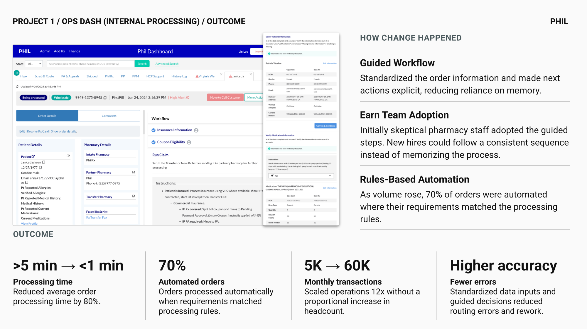

Ops dashboard redesign
The Scrub and Route workflow was the critical first step for every technician and pharmacist, but the legacy architecture was brittle with no guided experience. I directed a complete architectural overhaul — cutting processing time from five minutes to under one minute and enabling 70% order automation.

The Scrub and Route within the Ops Dash is the critical first step for all technicians and pharmacists, requiring them to review patient data and transfer orders to partnered pharmacies. However, the legacy architecture was brittle and lacked a structured, guided experience. Pharmacists were forced to rely on manual memory and sift through unnecessary information to process each order. This systemic inefficiency created an operational bottleneck, pushing average processing times over five minutes and effectively capping our daily fulfillment volume.
Resolving this required more than a UI refresh because it demanded a complete architectural overhaul of the workflow. I directed the transition to a scalable, component-driven framework that provided clear, step-by-step instructions. By partnering closely with Product and Engineering leadership, I ensured our design strategy standardized data inputs and established a streamlined workflow. This approach eliminated the cognitive burden on the pharmacy team, fundamentally improving both processing speed and routing accuracy.
Instead of pursuing a time-consuming and expensive platform overhaul, I scoped a targeted design strategy focusing on the critical areas users needed most including guided experiences, standardized order information, and clear communication channels. While the pharmacy team was initially skeptical of the operational shift, the intuitive component-driven design drove rapid adoption. We achieved an immediate reduction in processing time from over five minutes to under a minute, while reducing platform training time for new hires as we scaled the staff 10x.
Within two quarters, surging prescription volumes made it clear that manual processing was no longer sustainable. Because I had established a strict, component-driven design architecture, Engineering had the structural foundation necessary to automate the workflow. This redesign seamlessly facilitated the implementation of a full automation process, ultimately driving 70% of all orders to be fully automated.


